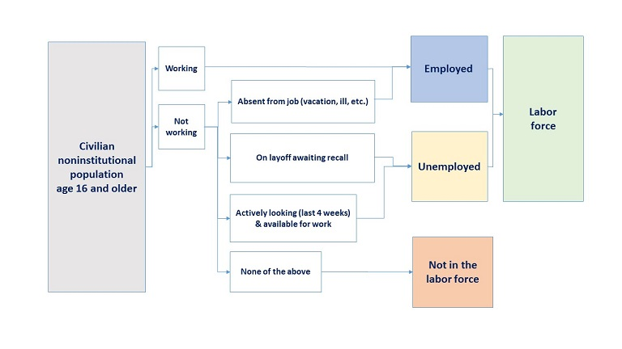

Mingze Huang
2021-08-04
Question: How does Covid-related shutdown disrupt supply chain and macroeconomy?
Uber Driver’s Unemployment Benefit
Question: Are Gig workers like Uber drivers counted as workers?
Job Search Requirement and Unemployment Benefit
Question: Are unemployed workers supposed to search job actively?
To answer these questions, we need basic concepts in macroeconomics.
When macroeconomists study an economy, they first look at three variables:
Output - the level of production of the economy as a whole - and its rate of growth.
Unemployment rate - the proportion of workers in the economy who are not employed and are looking for a job.
Inflation rate - the rate at which the average price of the goods in the economy is increasing over time.
Gross domestic product (GDP) is the value of the final goods and services produced in the economy during a given period.
Example:
Texas Instrument produces chips (not edible), employing workers and using machines to do so. It sells the chips for $100 to Ford, which produces cars. TI pays its workers $80.
Ford buys the chip and uses it, together with workers and machines, to produce cars. Revenues from car sales are $200. Of the $200, $100 goes to pay for chips and $70 goes to workers in the firm, leaving $30 in profit to the firm.
| TI (Chip Maker) | Ford (car Manufacturer) | |
|---|---|---|
| Revenues from sales | 100 | 200 |
| Wages | 80 | 70 |
| chip purchases | - | 100 |
| Profit | 20 | 30 |
Question: Would you define aggregate output in this economy as the sum of the values of all goods ($100 from the production of chips and $200 from the production of cars)? Or just the final goods (value of car $200)?
Example (continued):
Suppose Texas Instrument is inspired by Google self-driving car and Tesla, they decide to acquire Ford as a key procedure to enter self-driving market.
The acquisition lead to the merge of profit and loss statement (P&L). The merged firm sells cars for $200, paying workers $80 + $70 = $150, and making $20 + $30 = $50 in profits.
| TI&M (Merged Company) | |
|---|---|
| Revenues from sales | 200 |
| Wages | 150 |
| Profit | 50 |
Gross domestic product (GDP) is the sum of value added in the economy during a given period. The value added by a firm is defined as the value of its production minus the value of the intermediate goods used in production.
In the two-firm example, Texas Instrument does not use intermediate goods. Its value added from TI is simply the value of chips it produces ($100).
Ford uses chips as intermediate goods. So the value added from Ford is the cars it produces minus the chips it uses ($200 - $100 = $100).
Total value added in the economy is $100 + $100 = $200.
Example (continued)
| TI (Chip Maker) | Ford (car Manufacturer) | |
|---|---|---|
| Revenues from sales | 100 | 200 |
| Wages | 80 | 70 |
| chip purchases | - | 100 |
| Profit | 20 | 30 |
Both definition 1 and definition 2 are GDP measured from production side (from producer’s perspective).
Gross domestic product (GDP) is the sum of incomes in the economy during a given period.
Example (continued)
| TI (Chip Maker) | Ford (car Manufacturer) | |
|---|---|---|
| Revenues from sales | 100 | 200 |
| Wages | 80 | 70 |
| chip purchases | - | 100 |
| Profit | 20 | 30 |
Total value of final goods and services == Total value added during the production == Total income earned by market participants.
Nominal GDP is the sum of the quantities of final goods produced mulitiplied by their current prices.
Nominal GDP increases over time for two reasons:
Question: Does the increase of prices represent the increase of wellness? Gas Price Charts Gas Price Map
To eliminate the effects of increasing prices on our GDP measure, we construct real GDP as the sum of the production of final goods multiplied by constant (rather than current) prices.
Example:
Example (continued):
| Year | Quantity (Cars) | Price (cars) | Quantity (Gas) | Price (Gas) |
|---|---|---|---|---|
| 2020 | 10 | 20 | 10 | 1.5 |
| 2021 | 20 | 30 | 20 | 3.0 |
Nominal GDP: \[ Y_{2020}^{n}=P_{2020}^{C}Q_{2020}^{C}+P_{2020}^{G}Q_{2020}^{G}=20\times10+1.5\times10=215\\ Y_{2021}^{n}=P_{2021}^{C}Q_{2021}^{C}+P_{2021}^{G}Q_{2021}^{G}=30\times20+3\times20=660 \] From 2020 to 2021, nominal GDP has increased by \(\frac{660-215}{215}\times100\% \approx 206.98\%\), due to both increasing production and increasing prices.
If we use 2020 as base year (prices of 2020 as constant price), Real GDP: \[ Y_{2020}^{r}=Y_{2020}^{r}=215\\ Y_{2021}^{r}=P_{2020}^{C}Q_{2021}^{C}+P_{2020}^{G}Q_{2021}^{G}=20\times20+1.5\times20=430 \] From 2020 to 2021, real GDP has increased by \(\frac{430-215}{215}\times100\%=100\%\), only due to increasing production, keeping prices constant.
The gap between nominal GDP and real GDP comes from price level, which can be measured by GDP deflator, the ratio of nominal to real GDP: \[ P=\frac{Y^{n}}{Y^{r}} \] Since 2020 is base year, \(P_{2020}=\frac{Y_{2020}^{n}}{Y_{2020}^{r}}=1\).
The GDP deflator for 2021 is \(P_{2021}=\frac{Y_{2021}^{n}}{Y_{2021}^{r}}=\frac{660}{430}=153.49\%\).
Similarly, we define the gap between nominal GDP growth and real GDP growth as GDP deflator inflation, which is a measure of the increase in price level of goods produced in the economy during a given year, \(Y_{t}\).
\[ \pi=\frac{Y_{t}^{n}-Y_{t-1}^{n}}{Y_{t-1}^{n}}-\frac{Y_{t}^{r}-Y_{t-1}^{r}}{Y_{t-1}^{r}} \]
For 2021, \(\pi_{2021}=\frac{Y_{2021}^{n}-Y_{2020}^{n}}{Y_{2020}^{n}}-\frac{Y_{2021}^{r}-Y_{2020}^{r}}{Y_{2020}^{r}}=206.98\%-100\%=106.98\%\)
GDP deflator inflation is NOT the growth of GDP deflator! GDP deflator is to fill the gap between nominal and real GDP (level), GDP deflator inflation is to fill the gap between nominal growth and real growth rate of GDP.
Employment (N) is the number of people who have a job; unemployment (U) is the number of people who do not have a job but are looking for one. The labor force (L) is the sum of employment and unemployment:
\[ L=N+U \] The unemployment rate (u) is the ratio of the number of people who are unemployed to the number of people in the labor force: \[ u=\frac{U}{L} \] Note that only those looking for a job are counted as unemployed; those who do not have a job and are not looking for one are counted as not in the labor force. When unemployment is high, some of unemployed give up looking for a job, these people are no longer counted as unemployed, so called discouraged workers.
To take discouraged workers into consideration, we define participation rate as the ratio of labor force to the total population of working age. Definition in CPS survey by Bureau of Labor Statistics

The labor force participation rate represents the number of people in the labor force as a percentage of the civilian noninstitutional population age 16 and older. In other words, the participation rate is the percentage of the population that is either working or actively looking for work.
The labor force participation rate is calculated as: (Labor Force ÷ Civilian Noninstitutional Population age 16 and older) x 100%.